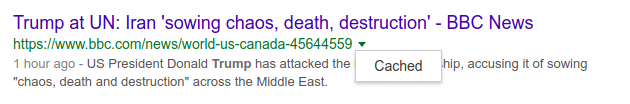

intitle:search something in the title of the page
site:mysite.comsearch something only on mysite.com
inurl:search something in the url of a page
intext: search something inthe page body
filetype:pdf search a specific file type
link:http://site.comsearch every pages linking to site.com
"Macron" intitle:"top 5..10 facts" -site:youtube.com inurl:2015
intitle:”curriculum vitae” “Tel * * *” “adresse *” “e-mail”
intext:"ma phrase pompée ailleurs" -site:monsite.com
site:amazon.* -site:amazon.com
site:twitter.com & intext:dvdrip
